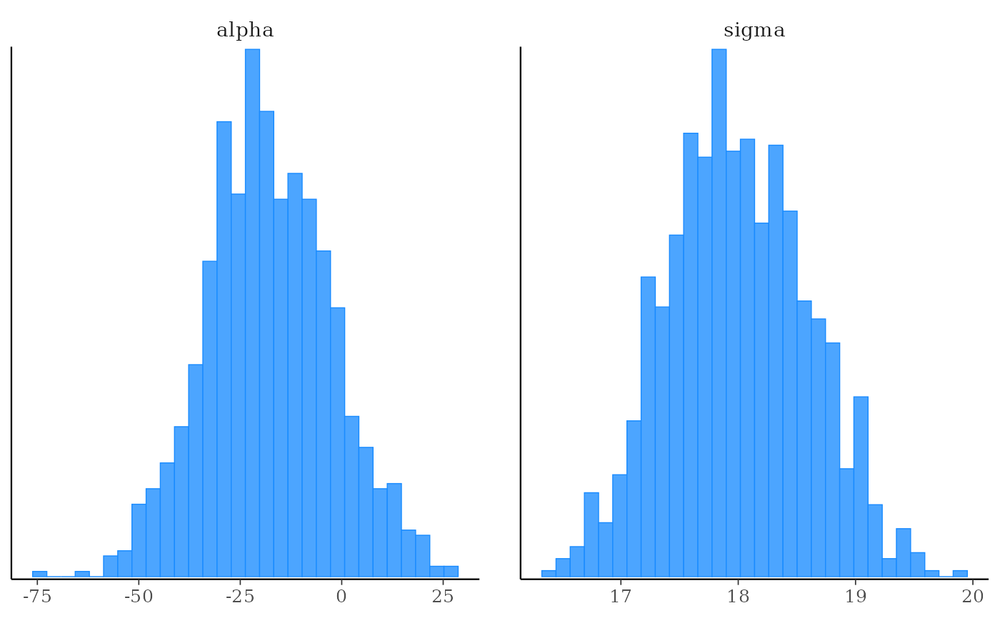
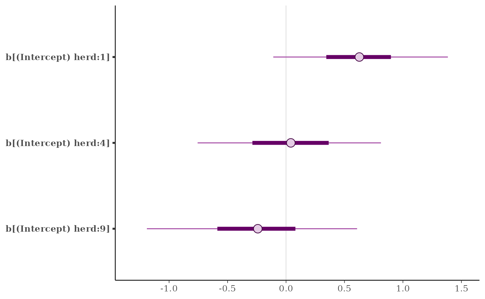
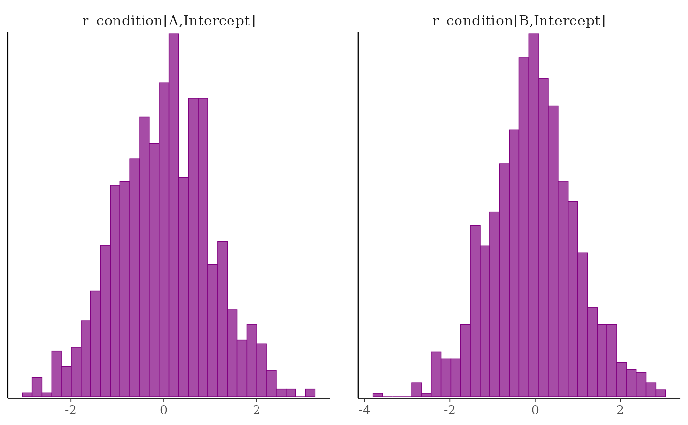
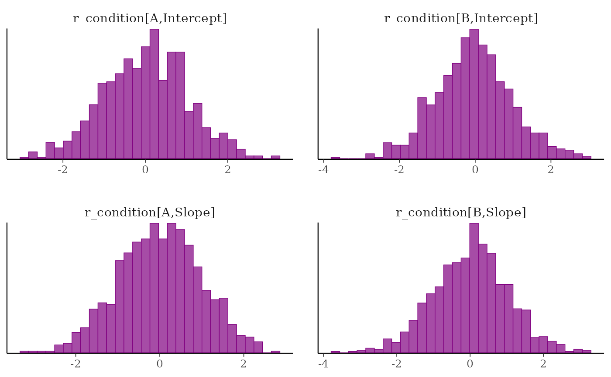

Parameter selection in the style of dplyr and other tidyverse packages.
Arguments
- prefix, range
For
param_range()only,prefixis a string naming a parameter andrangeis an integer vector providing the indices of a subset of elements to select. For example, usingwould select parameters named
beta[1],beta[2], andbeta[8].param_range()is only designed for the case that the indices are integers surrounded by brackets. If there are no brackets use num_range().- vars
NULLor a character vector of parameter names to choose from. This is only needed for the atypical use case of calling the function as a standalone function outside ofvars(),select(), etc. Typically this is left asNULLand will be set automatically for the user.- pattern, ...
For
param_glue()only,patternis a string containing expressions enclosed in braces and...should be named arguments providing one character vector per expression in braces inpattern. It is easiest to describe how to use these arguments with an example:would select parameters with names
"beta_age[3]","beta_income[3]","beta_age[8]","beta_income[8]".
Details
As of version 1.7.0, bayesplot allows the pars argument for MCMC plots to use "tidy" variable selection (in the
style of the dplyr package). The vars() function is
re-exported from dplyr for this purpose.
Features of tidy selection includes direct selection (vars(alpha, sigma)),
everything-but selection (vars(-alpha)), ranged selection
(vars(`beta[1]`:`beta[3]`)), support for selection functions
(vars(starts_with("beta"))), and combinations of these features. See the
Examples section, below.
When using pars for tidy parameter selection, the regex_pars argument is
ignored because bayesplot supports using tidyselect helper functions (starts_with(), contains(),
num_range(), etc.) for the same purpose. bayesplot also exports some
additional helper functions to help with parameter selection:
param_range(): likenum_range()but used when parameter indexes are in brackets (e.g.beta[2]).param_glue(): for more complicated parameter names with multiple indexes (including variable names) inside the brackets (e.g.,beta[(Intercept) age_group:3]).
These functions can be used inside of vars(), dplyr::select(),
and similar functions, just like the
tidyselect helper functions.
Extra Advice
Parameter names in vars() are not quoted. When the names contain special
characters like brackets, they should be wrapped in backticks, as in
vars(`beta[1]`).
To exclude a range of variables, wrap the sequence in parentheses and then
negate it. For example, (vars(-(`beta[1]`:`beta[3]`))) would exclude
beta[1], beta[2], and beta[3].
vars() is a helper function. It holds onto the names and expressions used
to select columns. When selecting variables inside a bayesplot
function, use vars(...): mcmc_hist(data, pars = vars(alpha)). When
using select() to prepare a dataframe for a bayesplot function, do
not use vars(): data %>% select(alpha) %>% mcmc_hist().
Internally, tidy selection works by converting names and expressions
into position numbers. As a result, integers will select parameters;
vars(1, 3) selects the first and third ones. We do not endorse this
approach because positions might change as variables are added and
removed from models. To select a parameter that happens to be called 1,
use backticks to escape it vars(`1`).
Examples
x <- example_mcmc_draws(params = 6)
dimnames(x)
#> $Iteration
#> NULL
#>
#> $Chain
#> [1] "chain:1" "chain:2" "chain:3" "chain:4"
#>
#> $Parameter
#> [1] "alpha" "sigma" "beta[1]" "beta[2]" "beta[3]" "beta[4]"
#>
mcmc_hex(x, pars = vars(alpha, `beta[2]`))
mcmc_dens(x, pars = vars(sigma, contains("beta")))
mcmc_hist(x, pars = vars(-contains("beta")))
#> `stat_bin()` using `bins = 30`. Pick better value `binwidth`.

# using the param_range() helper
mcmc_hist(x, pars = vars(param_range("beta", c(1, 3, 4))))
#> `stat_bin()` using `bins = 30`. Pick better value `binwidth`.
# \donttest{
#############################
## Examples using rstanarm ##
#############################
if (requireNamespace("rstanarm", quietly = TRUE)) {
# see ?rstanarm::example_model
fit <- example("example_model", package = "rstanarm", local=TRUE)$value
print(fit)
posterior <- as.data.frame(fit)
str(posterior)
color_scheme_set("brightblue")
mcmc_hist(posterior, pars = vars(size, contains("period")))
# same as previous but using dplyr::select() and piping
library("dplyr")
posterior %>%
select(size, contains("period")) %>%
mcmc_hist()
mcmc_intervals(posterior, pars = vars(contains("herd")))
mcmc_intervals(posterior, pars = vars(contains("herd"), -contains("Sigma")))
bayesplot_theme_set(ggplot2::theme_dark())
color_scheme_set("viridisC")
mcmc_areas_ridges(posterior, pars = vars(starts_with("b[")))
bayesplot_theme_set()
color_scheme_set("purple")
not_789 <- vars(starts_with("b["), -matches("[7-9]"))
mcmc_intervals(posterior, pars = not_789)
# using the param_glue() helper
just_149 <- vars(param_glue("b[(Intercept) herd:{level}]", level = c(1,4,9)))
mcmc_intervals(posterior, pars = just_149)
# same but using param_glue() with dplyr::select()
# before passing to bayesplot
posterior %>%
select(param_glue("b[(Intercept) herd:{level}]",
level = c(1, 4, 9))) %>%
mcmc_intervals()
}
#>
#> exmpl_> if (.Platform$OS.type != "windows" || .Platform$r_arch != "i386") {
#> exmpl_+ example_model <-
#> exmpl_+ stan_glmer(cbind(incidence, size - incidence) ~ size + period + (1|herd),
#> exmpl_+ data = lme4::cbpp, family = binomial, QR = TRUE,
#> exmpl_+ # this next line is only to keep the example small in size!
#> exmpl_+ chains = 2, cores = 1, seed = 12345, iter = 1000, refresh = 0)
#> exmpl_+ example_model
#> exmpl_+ }
#> stan_glmer
#> family: binomial [logit]
#> formula: cbind(incidence, size - incidence) ~ size + period + (1 | herd)
#> observations: 56
#> ------
#> Median MAD_SD
#> (Intercept) -1.5 0.6
#> size 0.0 0.0
#> period2 -1.0 0.3
#> period3 -1.1 0.4
#> period4 -1.6 0.5
#>
#> Error terms:
#> Groups Name Std.Dev.
#> herd (Intercept) 0.76
#> Num. levels: herd 15
#>
#> ------
#> * For help interpreting the printed output see ?print.stanreg
#> * For info on the priors used see ?prior_summary.stanreg
#> stan_glmer
#> family: binomial [logit]
#> formula: cbind(incidence, size - incidence) ~ size + period + (1 | herd)
#> observations: 56
#> ------
#> Median MAD_SD
#> (Intercept) -1.5 0.6
#> size 0.0 0.0
#> period2 -1.0 0.3
#> period3 -1.1 0.4
#> period4 -1.6 0.5
#>
#> Error terms:
#> Groups Name Std.Dev.
#> herd (Intercept) 0.76
#> Num. levels: herd 15
#>
#> ------
#> * For help interpreting the printed output see ?print.stanreg
#> * For info on the priors used see ?prior_summary.stanreg
#> 'data.frame': 1000 obs. of 21 variables:
#> $ (Intercept) : num -1.6 -1.24 -1.3 -1.8 -1.48 ...
#> $ size : num 0.0124 -0.0029 -0.00998 0.0388 -0.01711 ...
#> $ period2 : num -1.541 -1.037 -0.871 -0.957 -0.708 ...
#> $ period3 : num -0.961 -0.908 -1.264 -1.376 -0.839 ...
#> $ period4 : num -0.992 -2.078 -2.285 -1.928 -1.864 ...
#> $ b[(Intercept) herd:1] : num 1.278 0.236 0.585 0.519 1.145 ...
#> $ b[(Intercept) herd:2] : num -0.6003 -0.4211 0.2602 0.046 0.0328 ...
#> $ b[(Intercept) herd:3] : num 0.0964 -0.164 0.4593 0.462 0.3967 ...
#> $ b[(Intercept) herd:4] : num -0.25115 -0.66573 -0.00498 -0.02112 0.17044 ...
#> $ b[(Intercept) herd:5] : num -0.43488 -0.41332 0.03217 0.00765 -0.69101 ...
#> $ b[(Intercept) herd:6] : num -0.192 -1.3639 0.1202 -0.0872 -0.7538 ...
#> $ b[(Intercept) herd:7] : num 1.111 0.709 0.856 1.038 1.055 ...
#> $ b[(Intercept) herd:8] : num -0.1658 0.3727 0.4357 0.1857 0.0805 ...
#> $ b[(Intercept) herd:9] : num -1.0669 -1.0112 -0.0674 -0.1599 0.4322 ...
#> $ b[(Intercept) herd:10] : num -1.433 -0.861 -0.218 -0.391 -0.283 ...
#> $ b[(Intercept) herd:11] : num -0.374583 0.187836 -0.000632 -0.24431 0.533227 ...
#> $ b[(Intercept) herd:12] : num -0.3899 0.1492 -0.106 0.0967 -0.2035 ...
#> $ b[(Intercept) herd:13] : num -0.785 -0.714 -0.837 -1.062 -1.234 ...
#> $ b[(Intercept) herd:14] : num 0.936 0.853 0.483 0.763 0.867 ...
#> $ b[(Intercept) herd:15] : num -0.5534 -0.3425 -0.6066 -0.0171 -1.0893 ...
#> $ Sigma[herd:(Intercept),(Intercept)]: num 0.419 0.451 0.252 0.344 1.087 ...
#>
#> Attaching package: ‘dplyr’
#> The following objects are masked from ‘package:stats’:
#>
#> filter, lag
#> The following objects are masked from ‘package:base’:
#>
#> intersect, setdiff, setequal, union

# }
# \dontrun{
###################################
## More examples of param_glue() ##
###################################
library(dplyr)
posterior <- tibble(
b_Intercept = rnorm(1000),
sd_condition__Intercept = rexp(1000),
sigma = rexp(1000),
`r_condition[A,Intercept]` = rnorm(1000),
`r_condition[B,Intercept]` = rnorm(1000),
`r_condition[C,Intercept]` = rnorm(1000),
`r_condition[A,Slope]` = rnorm(1000),
`r_condition[B,Slope]` = rnorm(1000)
)
posterior
#> # A tibble: 1,000 × 8
#> b_Intercept sd_condition__Intercept sigma `r_condition[A,Intercept]`
#> <dbl> <dbl> <dbl> <dbl>
#> 1 -0.396 0.0636 0.251 -0.443
#> 2 0.0641 0.504 0.630 -0.00404
#> 3 -0.497 3.11 1.45 0.570
#> 4 0.0985 0.524 0.768 0.490
#> 5 -0.884 0.777 0.347 -1.44
#> 6 1.19 0.334 0.332 0.685
#> 7 -0.605 1.82 0.471 -0.822
#> 8 0.807 0.653 1.19 -0.893
#> 9 -0.810 1.03 0.460 0.536
#> 10 -0.117 0.688 1.28 2.28
#> # ℹ 990 more rows
#> # ℹ 4 more variables: `r_condition[B,Intercept]` <dbl>,
#> # `r_condition[C,Intercept]` <dbl>, `r_condition[A,Slope]` <dbl>,
#> # `r_condition[B,Slope]` <dbl>
# using one expression in braces
posterior %>%
select(
param_glue("r_condition[{level},Intercept]", level = c("A", "B"))
) %>%
mcmc_hist()
#> `stat_bin()` using `bins = 30`. Pick better value `binwidth`.

# using multiple expressions in braces
posterior %>%
select(
param_glue(
"r_condition[{level},{type}]",
level = c("A", "B"),
type = c("Intercept", "Slope"))
) %>%
mcmc_hist()
#> `stat_bin()` using `bins = 30`. Pick better value `binwidth`.

# }